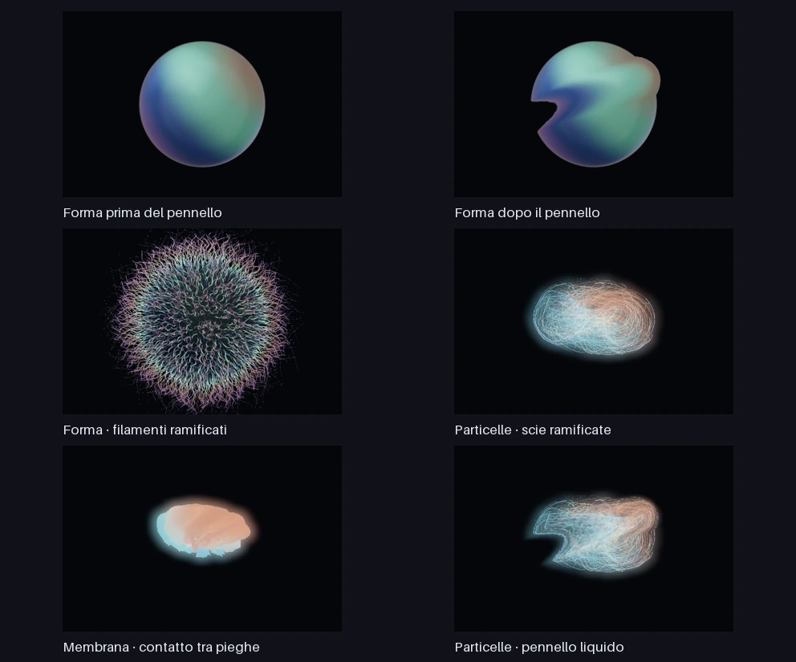

Pennello, rami e pieghe

In Filtri → Persistenza → Pennello liquido, regola raggio e forza e trascina sulla scena. I tratti si salvano insieme ai filtri e si ritrovano nell’esportazione.
In Forma → Filamenti su superficie regola la quota, la lunghezza e l’apertura dei rami. In Particelle trovi la quota e l’apertura in Forma → Scie. Gli impulsi di luce seguono anche i rami.
Per tessuti e membrane, Movimento → Vincoli di distanza e flessione contiene il contatto tra le pieghe e il margine tra le facce.